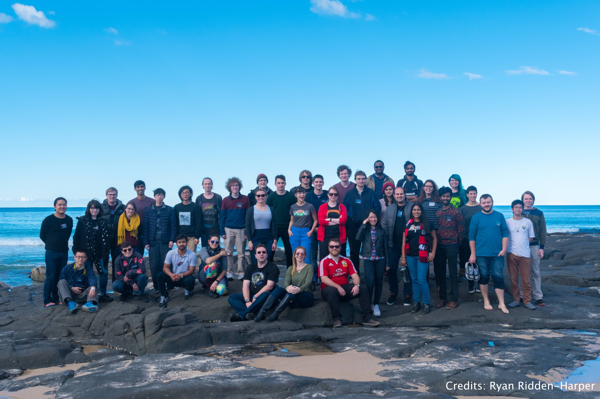

A list of conferences/schools I attended and talks/posters I presented there (if applicable):
- Contributed talk at AAS 2019 winter meeting on: "Testing new rest-frame optical & UV diagnostics on lensed galaxy at z=1.7"
- Contributed talk at AAS 2019 winter meeting on: "Determining effects of telescope resolution on metallicity gradien with synthetic observations of galaxy simulations"
- Contributed talk at Leiden Observatory on: "Determining effects of telescope resolution on metallicity gradien with synthetic observations of galaxy simulations"
- Contributed talk at Max Planck Institute for Astronomy (MPIA) Heidelberg, on: "Determining effects of telescope resolution on metallicity gradien with synthetic observations of galaxy simulations"
- Contributed talk at Institue for Theoretical Astrophysics (ITA) Heidelberg, on: "Determining effects of telescope resolution on metallicity gradien with synthetic observations of galaxy simulations"
- IAU 2018 Focus Meeting on Radial metallicity gradients, Vienna. Contributed poster: "Galaxy Metallicity Gradients: Effects of Telescope Resolution and Noise"
- ASA Annual Science Meeting 2018, Melbourne. Contributed poster: "Galaxy Metallicity Gradients: Effects of Telescope Resolution and Noise"
- Australian National Institute for Theoretical AStrophysics (ANITA) Meeting 2018, Perth. Contributed talk: "Effects of telescope resolution on metallicity gradient: Synthetic observations"
- 5th Annual GMT Community Science Meeting 2017, New York. Contributed talk: "Probing ISM CONDITIONS AT COSMIC NOON with REST-FRAME UV & OPTICAL DIAGNOSTICS".
- ASA Annual Science Meeting 2017, Canberra. Contributed talk: "Probing ISM conditions at cosmic noon with rest-frame UV diagnostics".
- Contributed talk at galaxy group meeting in CAS, Swinburne on modelling HII regions and producing synthetic data cubes.
- Harley Wood School of Astronomy 2017, Kioloa.
- Contributed seminar at Indian Institute of Technology (IIT) Kharagpur on: "Determining effects of telescope resolution on metallicity gradien with synthetic observations of galaxy simulations"
- Contributed seminar at National Centre for Radio Astrophysics (NCRA), Pune on: "Probing ISM CONDITIONS AT COSMIC NOON with REST-FRAME UV & OPTICAL DIAGNOSTICS"
- Mount Stromlo Student Seminars 2016, Canberra.
- Harley Wood School of Astronomy 2016, Sydney.
- Mount Stromlo Student Seminars 2015, Canberra. Contributed talk: "From quasars to lamps".